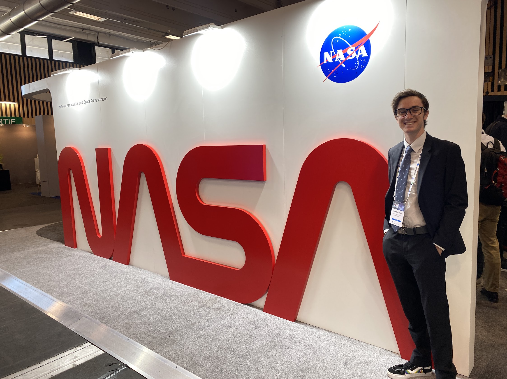

People
Board members, 2016–2017
Seth McLaughlin· Chair
Seth is a fourth-year Aerospace Engineering student. He has previously held the roles of Development Coordinator and External Coordinator for AIAA@UCSD. He also served as the Report Lead for the Design/Build/Fly team and is now a member of the Propulsion subteam of SEDS@UCSD.
Bryan Cheng· Vice-Chairperson
Bryan is a fourth-year Aerospace Engineering student. He previously held the External Coordinator position at AIAA@UCSD. This is his second year holding the Vice-Chairperson position. He enjoys dancing and any outdoor activities.
Brandon Vinh · Speaker Coordinator
Brandon is a fourth-year Aerospace Engineering major with a mathematics minor. Since his first year he has held the speaker coordinator position at AIAA@UCSD. He is currently the project manager for Triton Unmanned Aerial Systems and enjoys writing music and playing badminton outside of academia.
Carissa Yao · Grad Liaison

Carissa is a graduate student doing her Masters in Mechanical Engineering. She is a part of the five year BS/MS program here at UCSD and recently graduated with her Bachelors in Aerospace Engineering. She previously served as the outreach coordinator from 2020-2021 and was chairperson from 2021-2023 for AIAA@UCSD.
Vince Bantad · Social Coordinator
Angelica is a second-year Mechanical Engineering student. He holds a role for the first time as a social coordinator for AIAA@UCSD. He is currently a member of the Triton Unmanned Aerial Systems and enjoys reading Star Wars Legends books.
Sherry Tao · Secretary

Sherry is a fourth-year Aerospace Engineering student with a minor in philosophy. She previously held the position of social coordinator from 2021-2023 for AIAA@UCSD. She is currently a business lead for Triton Unmanned Aerial Systems and enjoys competitive speed cubing, dance and crochet in her free time.
Jorge Vergara · Outreach Coordinator
Jorge is a fourth-year Aerospace Engineering student. This is his second year holding the outreach position. Outside of school, he enjoys exercising, hiking, and camping.